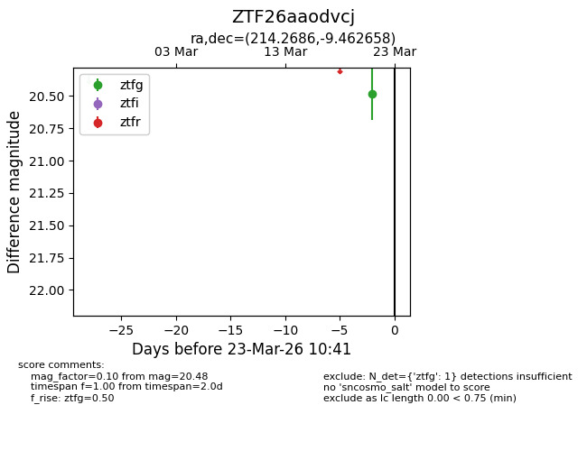
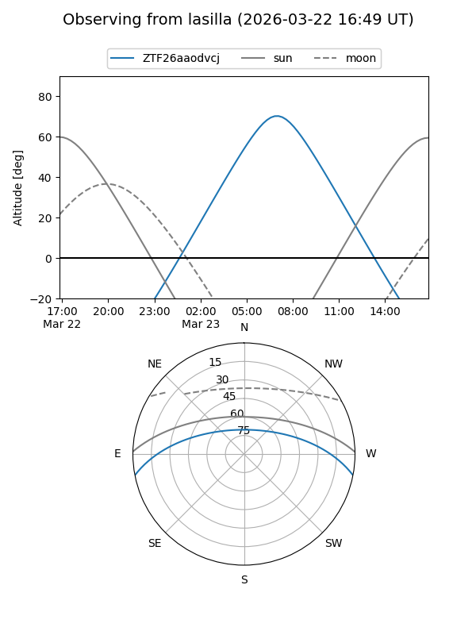
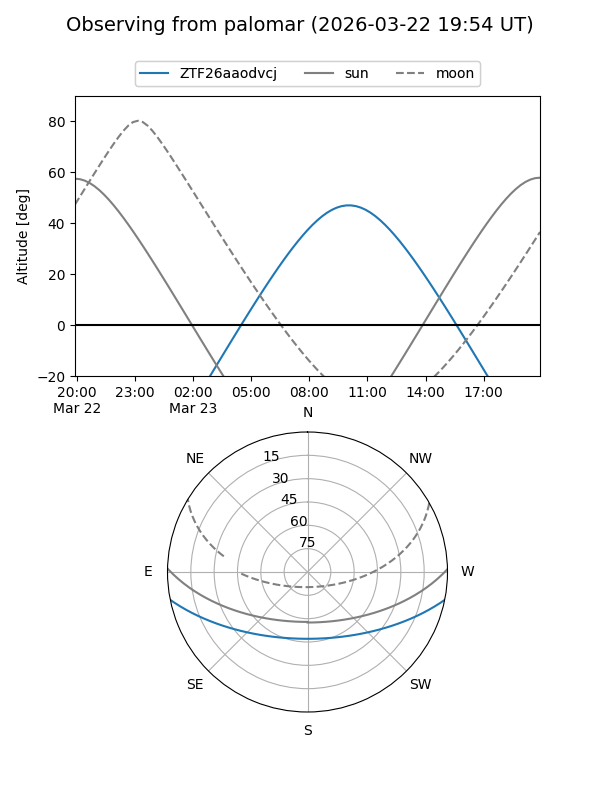

ZTF26aaodvcj
Target ZTF26aaodvcj at 2026-03-23 10:46
Aliases and brokers:
FINK: link
Lasair: link
ALeRCE: link
alt names
ZTF26aaodvcj (ztf,fink_ztf)
Coordinates:
equatorial (ra, dec) = 214.2686,-9.46266
equatorial (HMS+DMS) = 14:17:04.46,-09:27:45.57
galactic (l, b) = (335.4373,+47.93083)
Flags:
Photometry:
last ztfg=20.48
1 ztfg detections
Lightcurve

Visibility


Additional plots